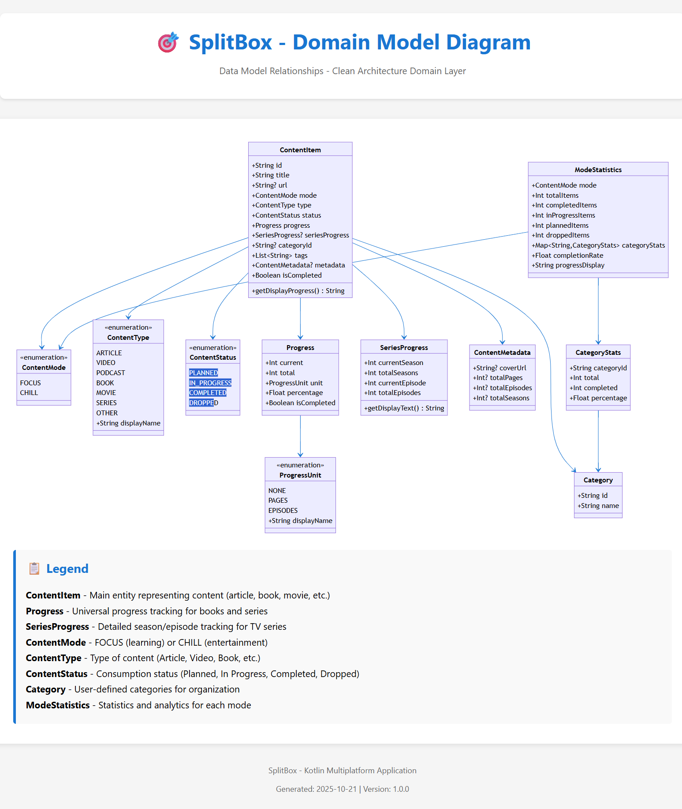
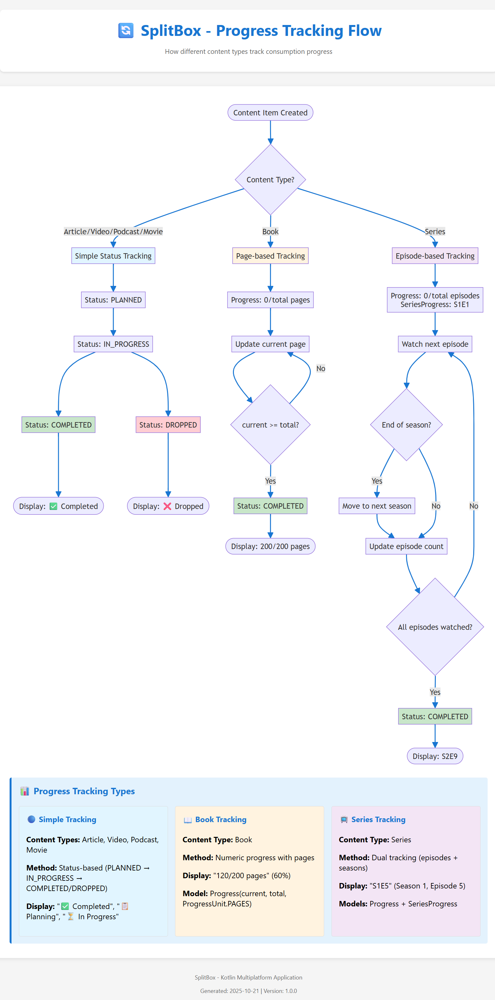

01
Из сырой ссылки в понятный элемент
Заголовок, описание, изображение, источник и тип контента подтягиваются автоматически, поэтому список выглядит читаемо, а не как набор непонятных URL.
Публичная витрина Kotlin Multiplatform проекта
LaterBox помогает собирать статьи, видео, книги, подкасты, фильмы и сериалы в одном месте, а затем превращает обычные ссылки в структурированные карточки с метаданными, прогрессом и понятным способом вернуться к ним позже.
FOCUS и CHILLПочему LaterBox
Большинство инструментов останавливаются на сохранении ссылки. LaterBox пытается сделать эту ссылку снова полезной за счет структуры, контекста и прогресса.
01
Заголовок, описание, изображение, источник и тип контента подтягиваются автоматически, поэтому список выглядит читаемо, а не как набор непонятных URL.
02
Статьи и книги обычно требуют другой очереди, чем фильмы, сериалы или расслабляющие видео. LaterBox закладывает это прямо в продуктовую модель.
03
Сохранить элемент — это только половина дела. Отслеживание прогресса помогает возвращаться к начатому, а не бесконечно складывать новые ссылки.
Скачивание
Публичная страница релизов используется как download hub. Там публикуются актуальные Android и Windows сборки для прямой установки.
Установите последнюю Android-сборку из GitHub Releases.
Скачать APKЛучший вариант, чтобы быстро попробовать приложение на телефоне или планшете.
Установите десктопную версию из актуального Windows-пакета.
Скачать MSIПодходит, если хотите использовать приложение прежде всего на десктопе.
Откройте обзор, архитектуру и заметки о публикации перед скачиванием.
Архитектура
LaterBox использует чистую структуру с слоями presentation,
domain и data. Приложение строится вокруг local-first
хранения и общей бизнес-логики.
Публикация
Этот репозиторий задуман как публичная витрина проекта и хаб для скачивания сборок, тогда как полный production-репозиторий может оставаться приватным.
Открыть гайд по публикацииДля рекрутеров и ревьюеров
Эта публичная витрина показывает продукт, архитектуру и сборки, не вынуждая публиковать весь внутренний код проекта.
Диаграммы


FAQ
Нет. Это публичный лендинг и release hub. Он показывает проект снаружи, при этом полный production-код может оставаться приватным.
Ссылки на скачивание ведут в GitHub Releases, где публикуются Android APK и Windows MSI пакеты.
LaterBox парсит метаданные, определяет тип контента, разделяет focus и chill сценарии и поддерживает отслеживание прогресса для длинного контента.
Kotlin Multiplatform, Compose Multiplatform, local-first хранение, разбор метаданных и общая доменная логика для нескольких платформ.